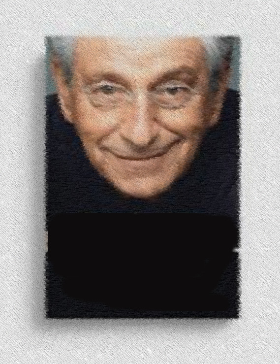

Contra Narrativa
=======COntra Narrativa
>>>>>>> 76bdb1217e2468cc23296714205057a69278fe36Formadores de Opinião
-
<<<<<<< HEAD Construindo a narrativa: Gabeira. Construindo a narrativa: Gabeira. >>>>>> 76bdb1217e2468cc23296714205057a69278fe36 alt="Image" class="w3-left w3-margin-right" style="width:200px">
Uma crítica a um texto de Fernando Gabeira criticando a Vaza Jato advogando em defesa da Luta contra a corrupção. Leniente com os abusos de Moro e Dallagnol, Gabeira diz defender a Justiça.
<<<<<<< HEAD Gaspari contra Intercept. ======= Gaspari contra Intercept. >>>>>>> 76bdb1217e2468cc23296714205057a69278fe36
>>>>>>> 76bdb1217e2468cc23296714205057a69278fe36
Trabalhando com o imaginário social criado cuidadosamente nos últimos anos, Gaspari ataca os vazamentos obtidos pelo Intercept. Manipulando a percepção pública sobre o papel do abuso de autoridade, Gaspari absolve Moro e condena Glenn
<<<<<<< HEAD Narrativas e Contranarrativas: combatendo significados. =======
Narrativas e Contranarrativas: combatendo significados.
=======
Narrativas e Contranarrativas: combatendo significados.
 >>>>>>> 76bdb1217e2468cc23296714205057a69278fe36
>>>>>>> 76bdb1217e2468cc23296714205057a69278fe36
Quando a loucura começa o país como um todo entra em delírio. Excitando os mais baixos instintos, o imaginário popular é preenchido pela Lava Jato. O mais absurdo pode então ser narrado como se fosse óbvio. O mais leve sinal ou signo não precisa de reflexão pois já é visto como prova, como forte evidência.
<<<<<<< HEAD Análise de redação do texto Terrorismo Digital de Pondé. =======
Análise de redação do texto Terrorismo Digital de Pondé.
=======
Análise de redação do texto Terrorismo Digital de Pondé.  >>>>>>> 76bdb1217e2468cc23296714205057a69278fe36
>>>>>>> 76bdb1217e2468cc23296714205057a69278fe36
Uma análise do artigo: Terrorismo Digital de Pondé na Folha de São Paulo de 17 de junho de 2019. Depois de analisado concluímos que não passaria no exame de redação do ENEN. O texto é um terror.
<<<<<<< HEAD FHC, uma tragédia quase grega. FHC, uma tragédia quase grega.
FHC, uma tragédia quase grega.  >>>>>> 76bdb1217e2468cc23296714205057a69278fe36
alt="Image" class="w3-left w3-margin-right" style="width:200px">
>>>>>> 76bdb1217e2468cc23296714205057a69278fe36
alt="Image" class="w3-left w3-margin-right" style="width:200px">
Comentário ao post “FHC e Lula: a inveja por trás da tragédia brasileira, por Luis Nassif“,GGN.